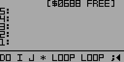

Pushes the loop value of a second-level DO loop onto the stack. Compile-only word
Example:
First, define a new word FOO with two nested DO loops: : FOO 9 7 DO 5 3 DO I J * LOOP LOOP ;
Defining FOO (partial view)
The outer DO loop iterates from 7 to 8 and the inner loop iterates from 3 to 4. The first time through, I pushes 3 onto the stack and J pushes 7. * multiplies the two values together and leaves 21 on the stack. The next iterations push the results of 4*7, 3*8, and 4*8.